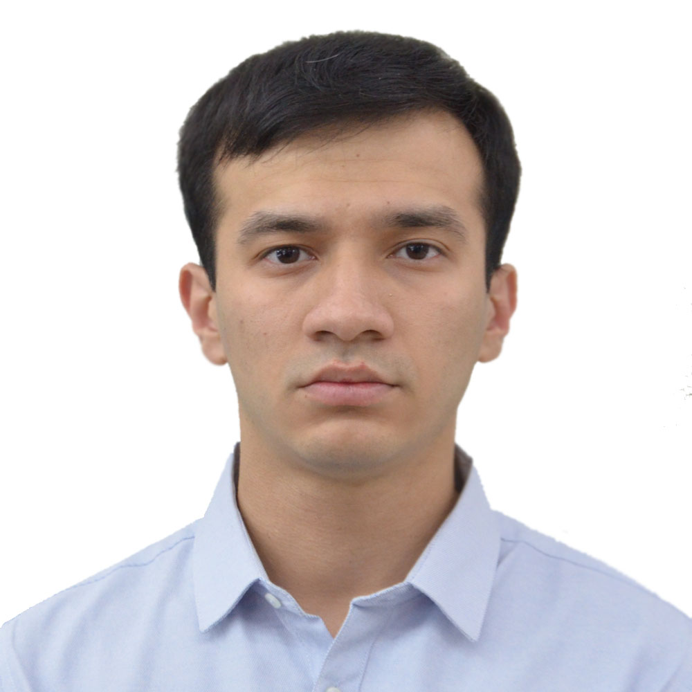
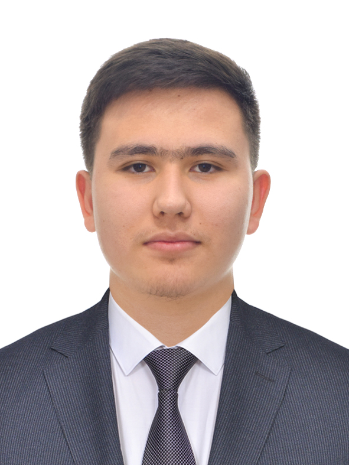
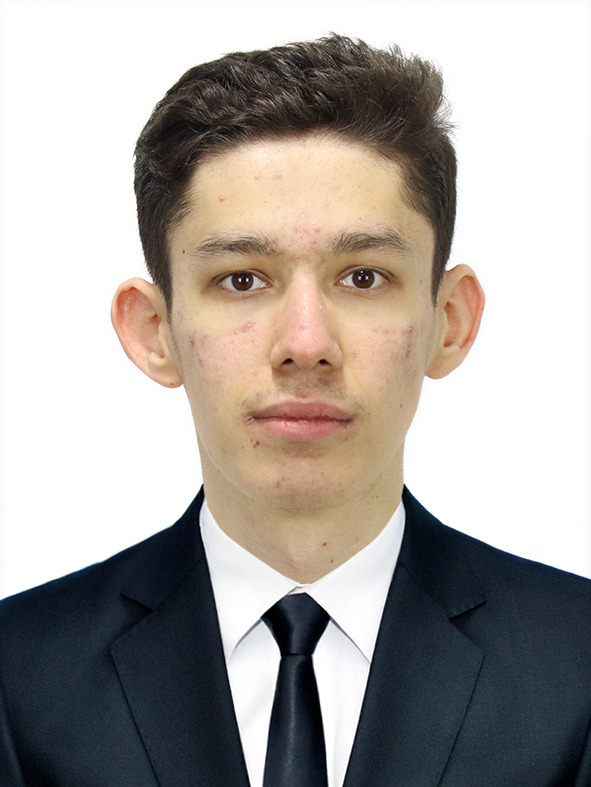

Исмоилов Ислом (с.ф.н.)Исмоилов Ислом (к.п.н.)
Бошқарма бошлиғиНачальник Управления
- бўлимлар фаолиятини мувофиқлаштириш;координация деятельности отделов;
- барча KPIларини бажарилишини назорат қилиш;контроль за исполнением всех KPI;
- ходимлар билан ишлашработа с сотрудниками
Ахборотларни умумлаштириш бўлими
Отдел свода информации

Иргашев Ботир
Ахборотларни умумлаштириш бўлими бошлиғи,
Бошқарма бошлиғи ўринбосариНачальник отдела свода информации,
зам. начальника Управления
Бошқарма бошлиғи ўринбосариНачальник отдела свода информации,
зам. начальника Управления
- бўлим фаолиятини мувофиқлаштириш;координация деятельности отдела;
- IT Park фаолияти бўйича ойлик (12 та) ва чораклик (4 та) умумлаштирилган маълумотларни тақдим қилиш;представление ежемесячной (12) и квартальной (4) сводной информации по деятельности IT Park;
- Раҳбариятни ахборот жиҳатидан таъминлаш;информационное сопровождение руководства;
- бўлим KPIларини бажарилишини назорат қилиш.контроль за исполнением KPI отдела.
ХодимларСотрудники

Муминов Шерзод
Бош мутахассисГлавный специалист
- IT Park’нинг 16 та бўлинмасининг маълумотларини умумлаштириш ва таҳлил қилиш;свод данных от 16 подразделений IT Park
- IT Park фаолияти бўйича ойлик ва чораклик умумлаштирилган маълумотларни тайёрлаш ва тақдим қилиш.ежемесячные и квартальные сводные отчёты

Рахимбоев Азамат
Етакчи мутахассисВедущий специалист
- IT Park’нинг 16 та бўлинмасининг маълумотларини умумлаштириш ва таҳлил қилиш;свод данных от 16 подразделений IT Park
- IT Park фаолияти бўйича ойлик ва чораклик умумлаштирилган маълумотларни тайёрлаш ва тақдим қилиш;ежемесячные и квартальные сводные отчёты;
- ижро интизоми ҳужжатлари билан ишлаш.работа с документами исполнительной дисциплины.

Давронбеков Отабек
Етакчи мутахассисВедущий специалист
- ягона маълумотлар базасини тизимлаштириш, умумлаштириш ва шакллантириш;единый банк данных: систематизация и формирование
- IT соҳасидаги услубиятларни, халқаро рейтинг ва индексларда иштирокни таҳлил қилиш ва баҳолаш.международные рейтинги и индексы

Женисбекова Назерке
Етакчи мутахассисВедущий специалист
- таҳлил талабига мувофиқ республика бўйича маълумотларни тақдим этиш;подборка информации РУз по требованиям анализа
- маълумотларни халқаро ташкилотлар тавсияларига мослик ва қиёсилигини таъминлаш.данные рекомендациям международных организаций
Стратегия ва таҳлил бўлими
Отдел стратегии и анализа

Эргашев Баходир
Стратегия ва таҳлил бўлими бошлиғиНачальник отдела стратегии и анализа
- 24 та таҳлилий маълумотнома (ҳисоботлар билан) тайёрлаш;24 аналитических записки (с отчётами) подготовка
- бўлим фаолиятини мувофиқлаштиришкоординация деятельности отдела
- бўлим KPIларини бажарилишини назорат қилиш.контроль за исполнением KPI отдела.
ХодимларСотрудники

Ибрагимов Ахмад
Бош мутахассисГлавный специалист
- IT соҳаси бўйича 24 та таҳлилий маълумотнома тайёрлаш (жорий ҳолат, давлат тизимларининг фаолияти, экспорт);24 ИАЗ по IT (текущее состояние, деятельность гос. сектора, экспорт)
- халқаро ҳисоботлар бўйича 20 та маълумотнома;20 справок по межд. отчетам
- тижоратлаштириш бўйича 1 та лойиҳа.1 проект по коммерциализации

Шухратов Элёрбек
Етакчи мутахассисВедущий специалист
- IT соҳаси бўйича 52 та ахборот-таҳлилий бюллетень тайёрлаш;52 подборки новостей, анализ IT сектора (бюллетень)
- мамлакатлар бўйича маълумотлар базасини доимий равишда янгилаб бориш (75 та мамлакат, 12 та кўрсаткич);обновление базы страновой информации (12 инд. по 75 странам)
- мамлакатлар бўйича 20 та маълумотнома;20 страновых справок;
- мамлакат ахборотларини мунтазам мониторинг қилиш.регулярный мониторинг информации по странам.

Холмаматов Шухрат
Етакчи мутахассисВедущий специалист
- 5 та техник ва эксплуатацион ҳужжат тайёрлаш;5 технических и эксплуатационных документаций
- резидентлар билан ишлашда кулайлик яратиш учун 4 та рақамли ечим (1 та маҳсулот);4 цифровых решения для работы с резидентами
- тижоратлаштириш бўйича 1 та лойиҳа;1 проект по коммерциализации;
- иш жараёнларини такомиллаштириш ва автоматлаштириш бўйича стратегия.стратегия цифровизации и оптимизации

Сулаймонов Шохрух
Етакчи мутахассисВедущий специалист
- 5 та техник ва эксплуатацион ҳужжат тайёрлаш;5 технических и эксплуатационных документаций
- бўлимлараро маълумот алмашиш бўйича 4 та рақамли ечим (Ғазнадорлат учун ахборот тизими);4 цифровых решения по обмену информацией между отделами
- тижоратлаштириш бўйича 1 та маҳсулот;1 продукт по коммерциализации;
- тижоратлаштириш бўйича 1 та лойиҳа;1 проект по коммерциализации;